BIGBEEZARR · Mamadou Beye
Tous les projetsAll projects
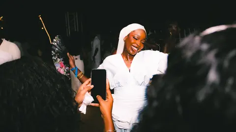
Jelani5 soirées photographiées5 nights photographed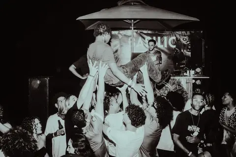
The Bashment10 soirées photographiées sur au moins 100 · 100e édition fêtée en octobre 202510 nights photographed out of at least 100 · 100th edition celebrated in October 2025Tout Whippin8 soirées photographiées8 nights photographed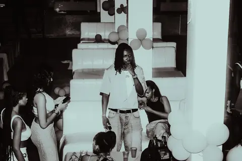
Litty4 soirées photographiées4 nights photographed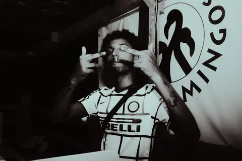
Ghetto Bash3 soirées photographiées3 nights photographed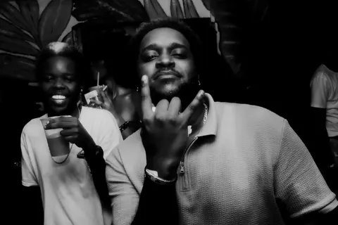
Afro BDakar · 2026 · 10 photos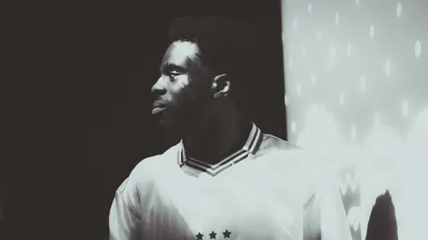
Afroteo2 soirées photographiées2 nights photographed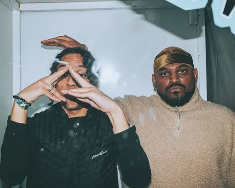
Mabina NightsMontréal · 2023 · 10 photos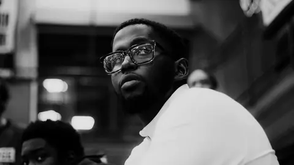
La Forge3 saisons photographiées3 seasons photographed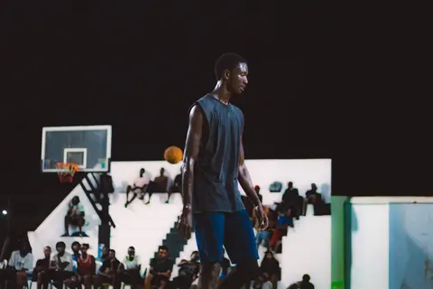
Riseball2 éditions photographiées2 editions photographed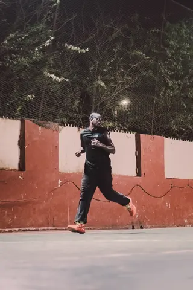
OC RunsDakar · 2025–2026 · 12 photos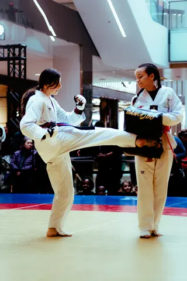
Jeux UrbainsMontréal · 2026 · 10 photosVJ2 concerts photographiés2 concerts photographed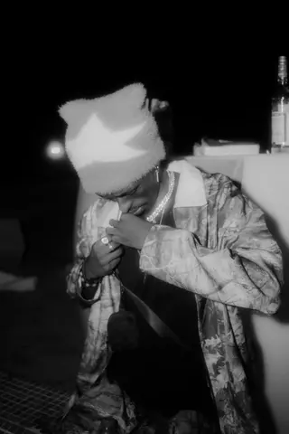
DLBDakar · 2025 · 14 photos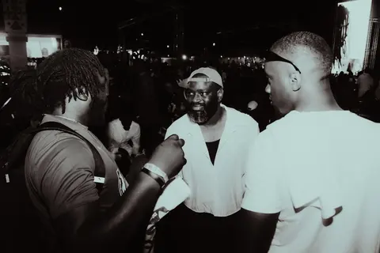
BAL × Wave1 édition photographiée sur 2 · Première édition en 2025, deuxième en 20261 edition photographed out of 2 · First edition in 2025, second in 2026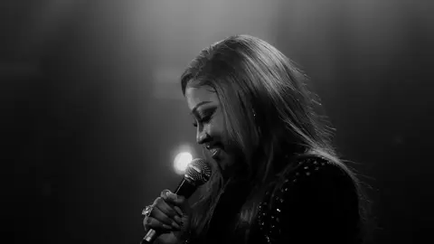
Canabasse & AstarMontréal · 2026 · 13 photos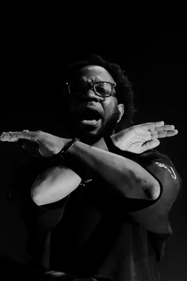
Appart3 concerts photographiés3 concerts photographed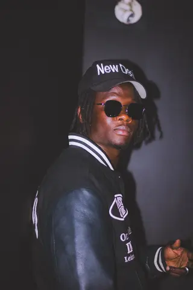
Ashs the BestMontréal · 2024 · 10 photos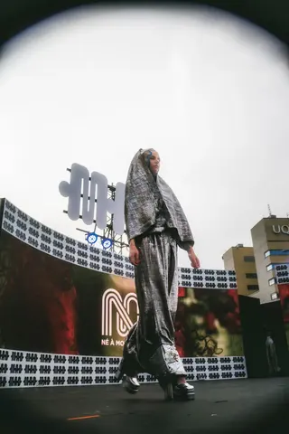
MAD Festival1 édition photographiée sur 25 · 25e édition en 20251 edition photographed out of 25 · 25th edition in 2025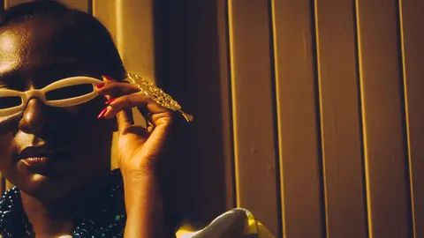
Jelani · New Africa FashionDakar · 31 photos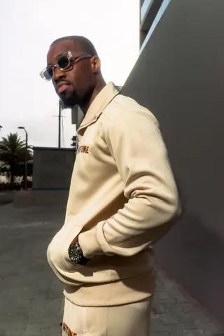
MarquesBrands6 marques photographiées6 brands photographed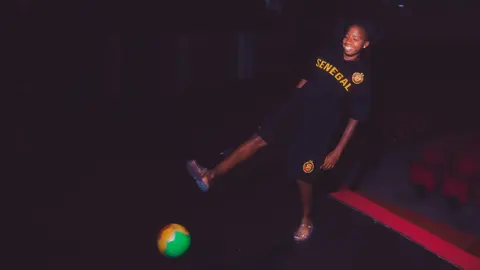
NoblesseDakar · Montréal · 2024–2026 · 20 photos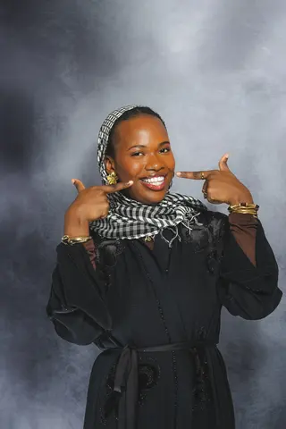
As salam wa al‑‘usra2025 · 19 photos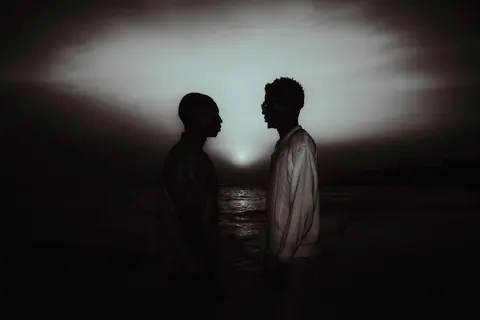
La bourrasque de la presqu'île du Cap-VertDakar · 18 photos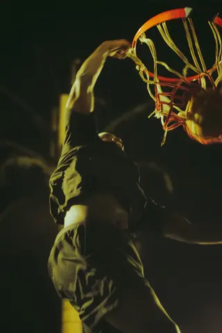
Mécanique passionnelleDakar · Olympique Club · 2025 · 10 photos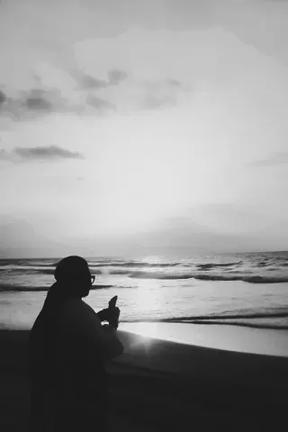
Rues et paysagesStreets and landscapesDakar · Montréal · 15 photos